Đánh giá hiệu năng Acer Nitro 5 phiên bản Ryzen 5000:
Mạnh mẽ, nhưng...
2020-12-25 20:45:46
Vừa qua, Acer đã chính thức cho ra mắt những dòng gaming laptop của hãng, trong đó tiêu biểu là những sản phẩm gaming sử dụng vi xử lý AMD Ryzen 5000. Và hôm nay, trên tay mình đang là chiếc Acer Nitro 5 phiên bản 17 inch, với APU Ryzen 7 5800H và card đồ họa Nvidia GTX 1650 4GB.
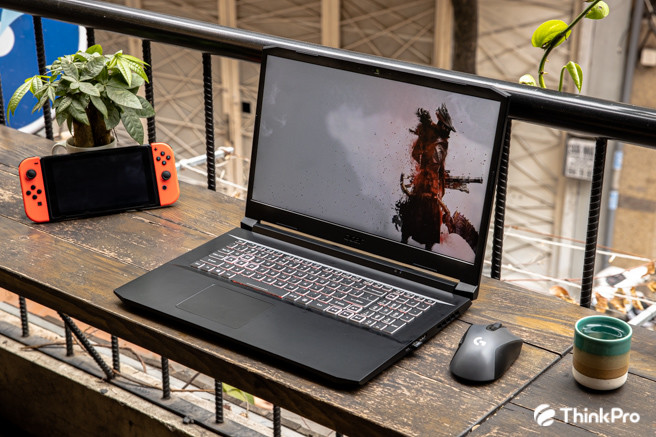
Về ngoại quan, có vẻ như Acer cũng không có sự thay đổi gì về thiết kế. Máy vẫn giữ nguyên phong cách đen truyền thống cùng với họa tiết đỏ đằng sau lưng. Acer Nitro 5 17 inch vẫn giữ trọng lượng cực nhẹ, với 2.2kg, nhẹ hơn hẳn so với những chiếc laptop
gaming 17 inch khác.
Máy vẫn giữ hệ thống cổng kết nối tương tự phiên bản trước. Phía cạnh trái của máy là 2 cổng USB-A 3.2 Gen 1, một cổng mạng RJ-45, cổng jack 3.5mm combo và khóa Kensington.
Phía cạnh phải sẽ có một cổng USB-A 3.2 Gen 1, cổng HDMI 2.0b và USB-C 3.2 Gen 1, tuy nhiên chỉ có thể dùng để truyền dữ liệu, chứ không thể xuất hình
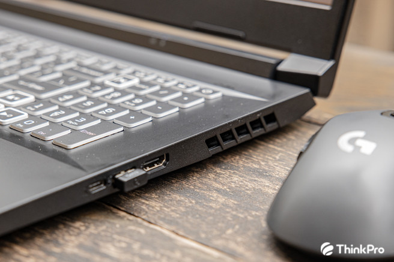Phần gáy máy vẫn là họa tiết đỏ nổi bật cùng với họa tiết đỏ quen thuộc. Dĩ nhiên, cổng sạc vẫn được đặt ngay ngắn ở chính giữa. Tuy nhiên, họa tiết đỏ của chiếc Acer này có phần được làm đậm hơn, so với màu đỏ tươi của phiên bản trước.
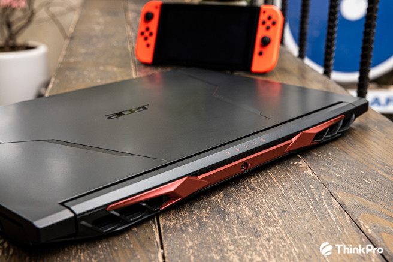Acer cũng không quá thay đổi phần nội quan. Hãng vẫn bố trí cho chiếc máy 2 khe SSD M.2 đối diện nhau, cùng với đó là một khay ổ cứng 2.5 inch, giúp nâng cấp tối đa khả năng lưu trữ của chiếc máy này. Máy vẫn được trang bị 2 khe RAM, cho khả năng nâng cấp toàn diện. Với một chiếc máy thuộc phân khúc tầm trung, các tụ điện cũng như VRM sẽ không quá chất lượng, nhưng đủ để duy trì cho chiếc máy hoạt động ổn định. Có thể phiên bản RTX 3080 sẽ được trang bị hệ thống VRM tốt hơn.
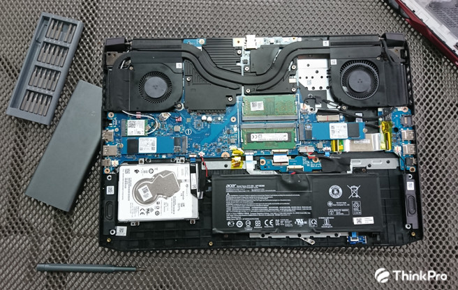Tới đến là hệ thống bàn phím. Mình đã mong đợi phiên bản 17 inch sẽ có một chút khác biệt về cách thức bố trí phím. Nhưng không, bàn phím vẫn giữ nguyên layout thiết kế từ Nitro 5 phiên bản 15 inch. Đây là bàn phím có hệ thống LED RGB 4 vùng, có mức sáng vừa phải, đủ dùng trong môi trường tối. Cách bố trí phím cũng đủ rộng để thao tác trong việc gaming, duy chỉ khu vực phím số và hệ thống phím mũi tên quá sát nhau, dễ thao tác nhầm khi gõ nhanh
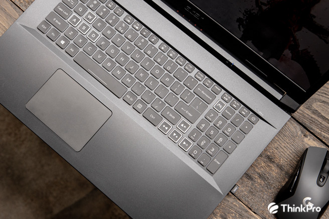Màn hình thì khỏi phải bàn cãi. Chiếc Acer Nitro 5 này được trang bị màn hình Full HD với tấm nền IPS, kèm theo đó là tần số quét 144Hz, rất phù hợp cho giới game thủ vào thời điểm hiện tại. Nhưng tất nhiên, với việc hướng đối tượng gaming là chủ yếu, Acer không chú trọng vào độ phủ màu, vậy nên màn hình có phần hơi nhợt nhạt hơn so với thực tế.
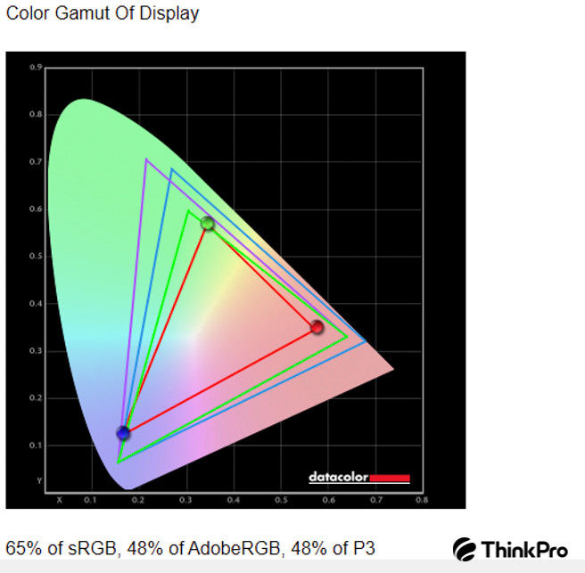 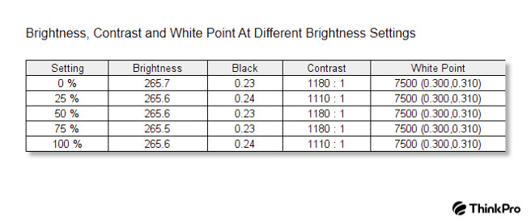Giờ là phần quan trọng nhất, hiệu năng của vi xử lý Ryzen 5000. Trước hết là cấu hình của chiếc máy này. Đây là phiên bản Acer Nitro 5 17.3 inch với vi xử lý AMD Ryzen 7 5800H 8 nhân 16 luồng, 16GB RAM và 2TB SSD cùng với 1TB HDD. Dĩ nhiên đây chỉ là phiên bản thử nghiệm, nên việc trang bị lượng dung lượng lưu trữ như vậy cũng không quá ảnh hưởng đến quá trình trải nghiệm. Tuy là gaming laptop, nhưng gaming sẽ không phải đối tượng chính để mình đánh giá, mà chủ yếu là ở APU R7 5800H, một phần cũng là do chiếc máy sử dụng card đồ họa Turing GTX 1650 4GB quá quen thuộc trên đa phần các dòng gaming laptop phổ thông hiện nay.
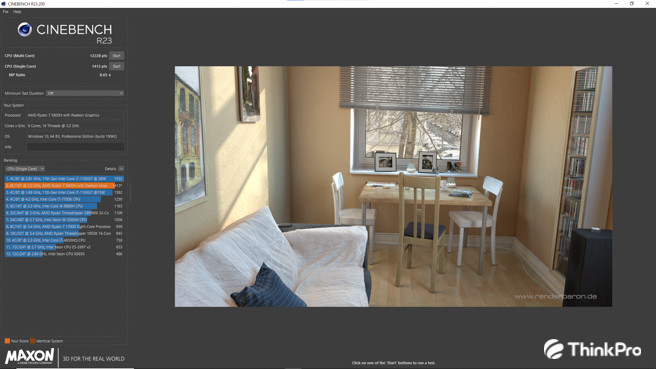Đầu tiên là bài test Cinebench R23. Đây là phiên bản Cinebench mới nhất, với những bài test được tối ưu cho các vi xử lý mới nhất, bao gồm cả Apple M1, vậy nên không có gì vô lý nếu sử dụng để test hiệu năng cho Ryzen 7 5800H. Điểm số đơn nhân cho chiếc Acer Nitro 5 là 1413 điểm, trong khi đa nhân lại vô cùng lớn với 12228 điểm.
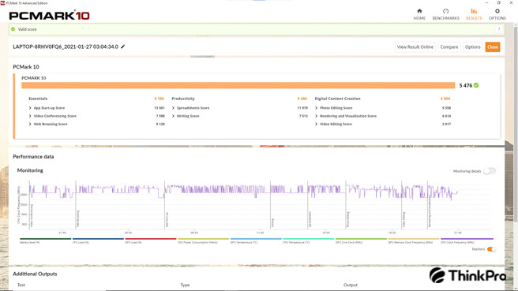Với PCMark 10 tổng thể, chỉ test trên APU R7 5800H và card đồ họa Radeon, máy cho ra điểm số 5476, với điểm Video Editing là thấp nhất. Điều này cũng không quá lạ khi máy chỉ chạy cùng card Radeon, mặc dù đây là card đồ họa tích hợp rất mạnh.
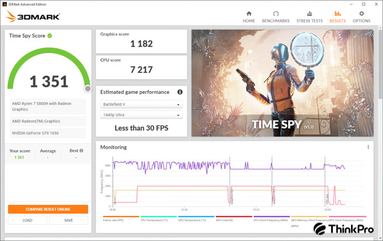Mình cũng cho chạy thử một chút TimeSpy, và như một lẽ dĩ nhiên, điểm số cho ra là 1351 với Radeon Graphics.
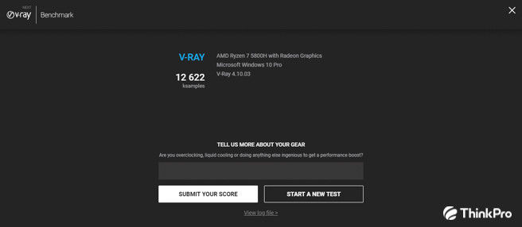Bên cạnh đó, để kiểm tra sức mạnh của vi xử lý này, mình có sử dụng Vray Benchmark, số điểm cho ra vô cùng đáng kinh ngạc, với 12622 cho CPU Benchmark, tuy nhiên GPU Benchmark lại chỉ đạt con số 72. Cũng không quá lạ với GPU Radeon khi đạt số điểm này, bởi đây cũng chỉ là một GPU tích hợp, nhưng qua hai điểm số trên cũng đủ để thấy sức mạnh của Ryzen 5000 như thế nào.
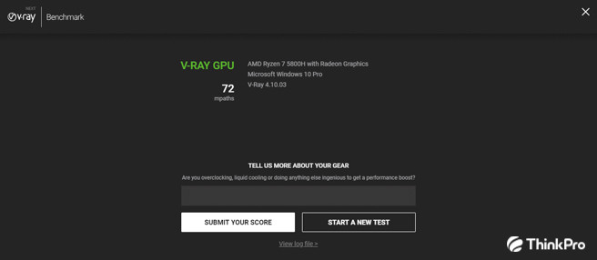 Cũng phải lưu ý rõ ràng, do đây là chiếc máy phiên bản thử nghiệm, nên phần mềm Nitrosense không thể hoạt động. Chính vì thế mà hiệu năng thực tế của chiếc máy sẽ không được phát huy toàn bộ. Mặc dù vậy, AMD Ryzen 7 5800H vẫn thực sự là một APU cực kỳ xuất sắc.Lý thuyết thì là vậy, còn gaming thì sao? Mình có thử nghiệm qua một số game, đa phần là E-sport, nhằm kiểm tra sức mạnh của APU R7 5800H với iGPU Radeon. Và mình cũng vô cùng bất ngờ với sức mạnh của cặp đôi mới mẻ này. 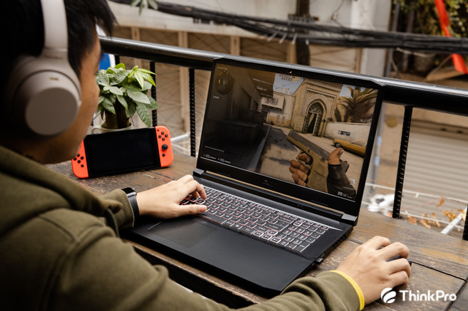
Mình có thử nghiệm tựa game Valorant - dòng game E-sport bắn súng mới nổi hiện nay, máy vẫn cho ra con số 89 FPS ở thiết đặt cấu hình cao nhất.
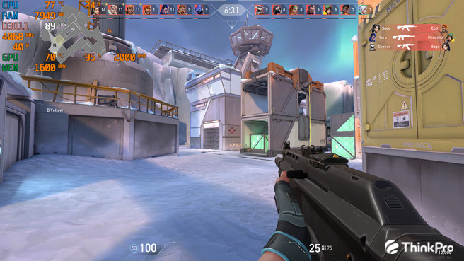Tiếp đến là League of Legends, FPS là 142 cho Radeon Graphics trên R7 5800H, một con số phải nói là rất tốt.
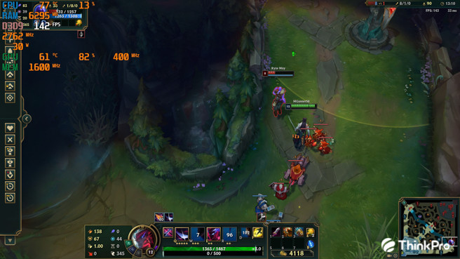Mình có thử qua bài benchmark của game Tomb Raider, số FPS trung bình chỉ đạt 29 ở mức thiết đặt thấp nhất, nhưng đây cũng là điều dễ hiểu, bởi một chiếc iGPU cũng không thể nào chạy quá tốt trên những tựa game nặng được.
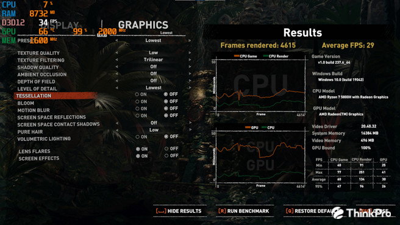Mình cũng đã thực hiện một vài bài test render của chiếc APU này, và máy cho ra kết quả khá khả quan. Mình đã thử xuất 90 bức ảnh Raw CR3 trên Lightroom Classic 2021, máy xuất toàn bộ ảnh ra trong khoảng thời gian 1 phút 55 giây, vô cùng nhanh chóng. Với Premiere Pro, mình cho máy Render downscale một phim ngắn 4K cỡ 10 phút với nhiều hiệu ứng khác nhau, và Nitro 5 chỉ mất 22 phút để hoàn thành bài Render.
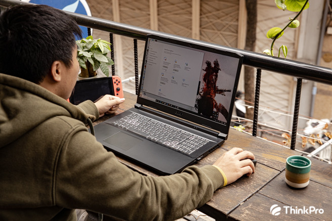Nhìn chung Acer Nitro 5 phiên bản AMD Ryzen 7 5800H đã làm rất tốt công việc của mình, với sức mạnh cực kỳ vượt trội, mặc dù không thể phát huy toàn bộ khả năng do Nitrosense không hoạt động, nhưng sự tối ưu hiệu năng mà Ryzen 5000 mang lại cũng khiến chiếc máy cực kỳ mạnh mẽ rồi.
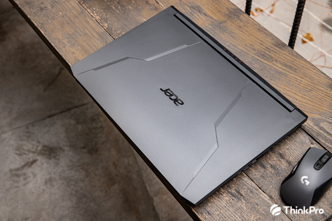Dự kiến sản phẩm sẽ được lên kệ ở các hệ thống bán lẻ sớm. ThinkPro cũng sẽ sớm có bài đánh giá khi có sản phẩm phiên bản thương mại trên tay.